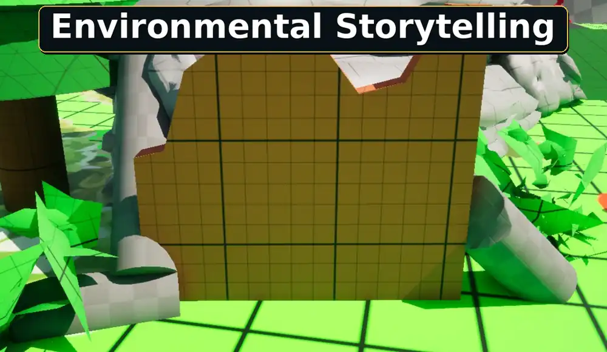
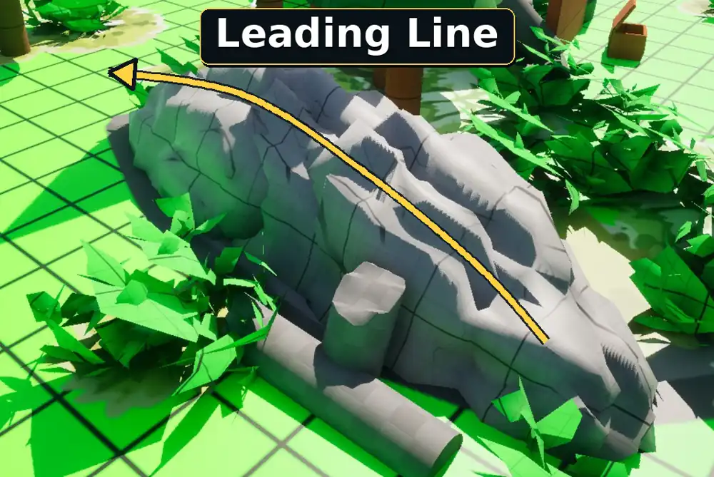
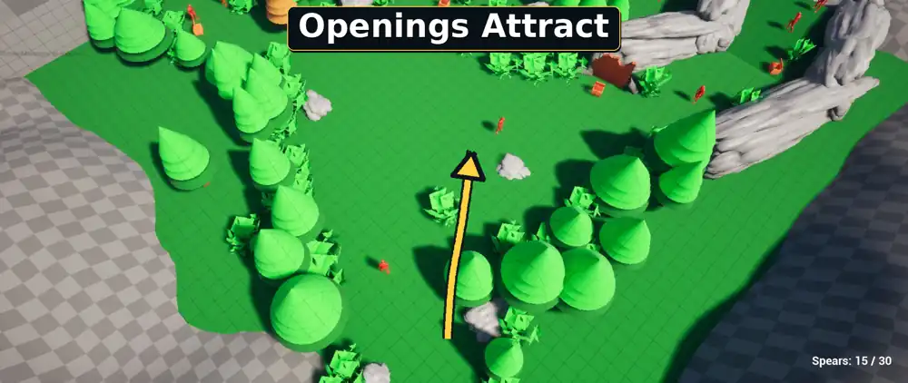
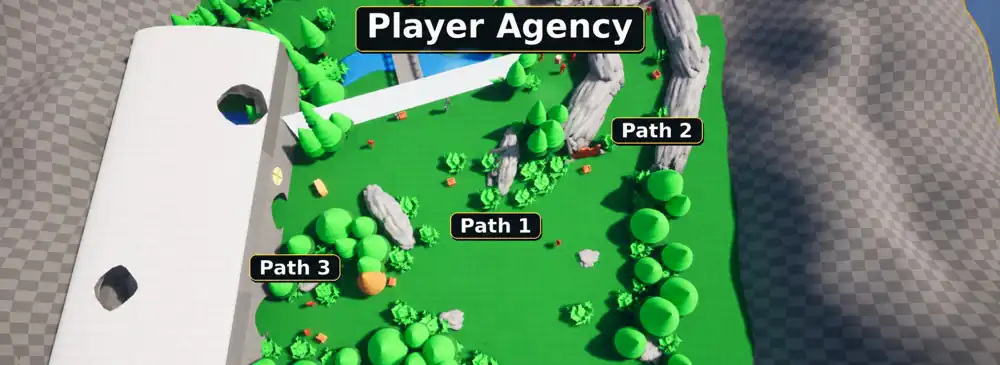
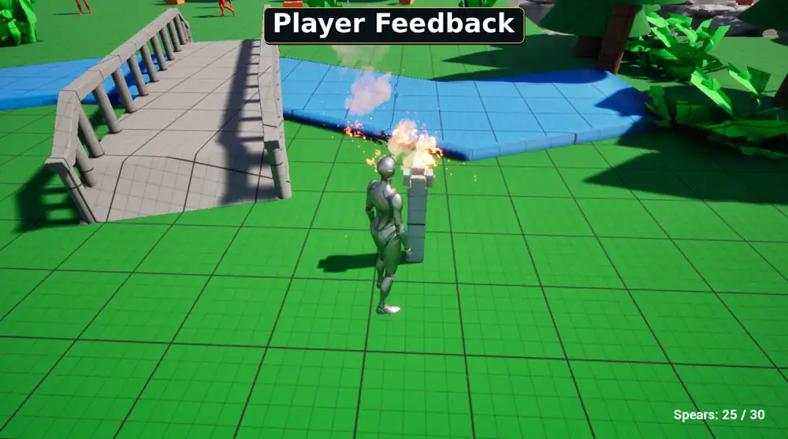
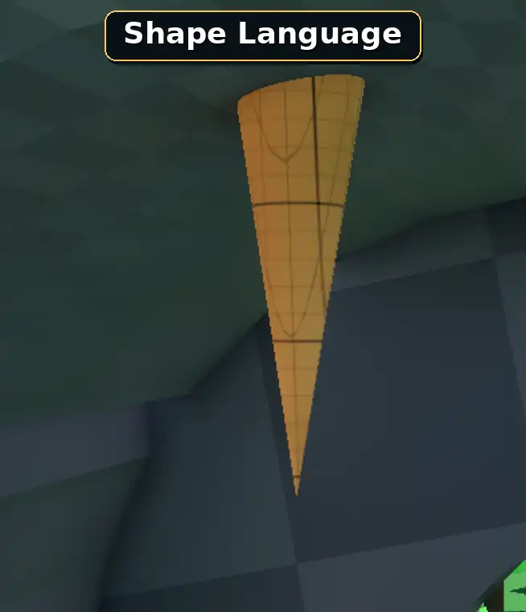
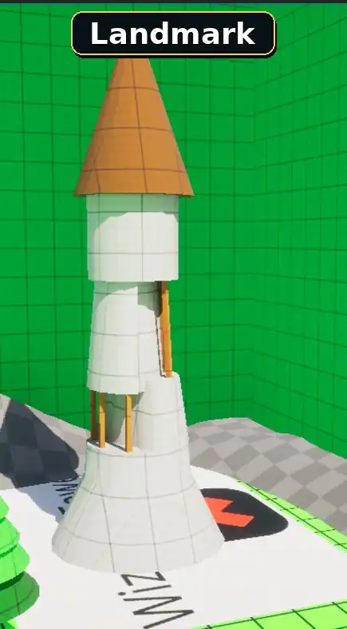
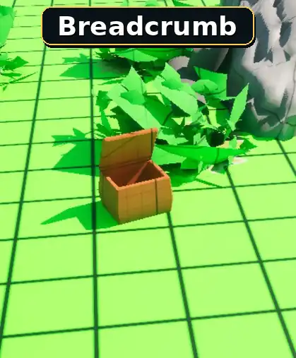

Wizard's Tower / Design breakdown
Level Design Concepts
These are examples from my Wizard's Tower level. I wanted to show how I used the environment to guide players, give them choices, and communicate what they might find or interact with.
These are annotated screenshots of the blockmesh, not finished environment art. Select an image to view it larger.


Environmental Storytelling
A damaged wall and rock formation help suggest that something happened in this part of the level.


Leading Line
The rock's shape creates a line that leads the player's eye toward the opening at the upper left.


Openings Attract
The opening between trees creates a clear space that may encourage players to move toward it.


Player Agency
The player can choose between three paths: Path 1 in the middle, Path 2 on the right, and Path 3 on the left.


Player Feedback
The fire and smoke effect gives the player a visible response to an interaction in the level.


Shape Language
The sharp, pointed silhouette communicates danger before the player reaches this hazard.


Landmark
The Lost Wizard's Tower stands out as a landmark and the player's main destination.


Breadcrumb
A supply chest can act as a breadcrumb by rewarding exploration and drawing attention to an area.

Color Language
The orange tree stands out against the green trees. I used the different color to suggest that it is dead and could fall.